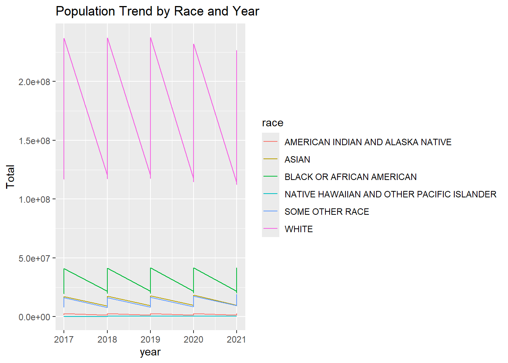

library(ggplot2)
data <- readRDS(here::here("dataset","Population by race and sex per year.rds"))
ggplot(data, aes(x = year, y = Total, color = race)) +
geom_line() +
labs(title = "Population Trend by Race and Year")
model <- lm(Total ~ race + sex + year, data = data)
summary(model)
Call:
lm(formula = Total ~ race + sex + year, data = data)
Residuals:
Min 1Q Median 3Q Max
-34133257 -12438325 3550983 7872538 64144270
Coefficients:
Estimate Std. Error t value
(Intercept) 274728858 3085863244 0.089
raceASIAN 10185681 7487643 1.360
raceBLACK OR AFRICAN AMERICAN 25818701 7487643 3.448
raceNATIVE HAWAIIAN AND OTHER PACIFIC ISLANDER -1406535 7487643 -0.188
raceSOME OTHER RACE 9595298 7487643 1.281
raceWHITE 154184000 7487643 20.592
sexMale -792684 5294563 -0.150
sexTotal 25753790 5294563 4.864
year -139299 1528409 -0.091
Pr(>|t|)
(Intercept) 0.929279
raceASIAN 0.177499
raceBLACK OR AFRICAN AMERICAN 0.000898 ***
raceNATIVE HAWAIIAN AND OTHER PACIFIC ISLANDER 0.851466
raceSOME OTHER RACE 0.203680
raceWHITE < 2e-16 ***
sexMale 0.881360
sexTotal 5.56e-06 ***
year 0.927606
---
Signif. codes: 0 '***' 0.001 '**' 0.01 '*' 0.05 '.' 0.1 ' ' 1
Residual standard error: 20510000 on 81 degrees of freedom
Multiple R-squared: 0.8932, Adjusted R-squared: 0.8827
F-statistic: 84.68 on 8 and 81 DF, p-value: < 2.2e-16